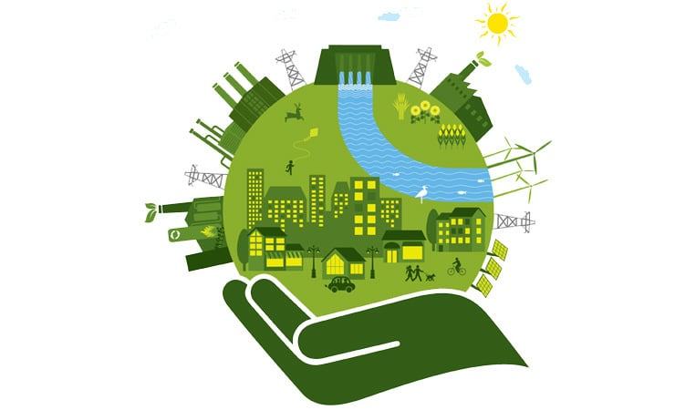

Impacto Ambiental
Definición
Se define impacto ambiental como la “Modificación del ambiente ocasionada por la acción del hombre o de la naturaleza”. Un huracán o un sismo pueden provocar impactos ambientales, sin embargo el instrumento Evaluación de Impacto Ambiental (EIA) se orienta a los impactos ambientales que eventualmente podrían ser provocados por obras o actividades que se encuentran en etapa de proyecto (impactos potenciales), o sea que no han sido iniciadas. De aquí el carácter preventivo del instrumento.

Tipos de impactos ambientales
Existen diversos tipos de impactos ambientales, pero fundamentalmente se pueden clasificar, de acuerdo a su origen, en los provocados por:
Asimismo, existen diversas clasificaciones de impactos ambientales de acuerdo a sus atributos; por ejemplo:
| Positivo o Negativo | En términos del efecto resultante en el ambiente. |
| Directo o Indirecto | Si es causado por alguna acción del proyecto o es resultado del efecto producido por la acción. |
| Acumulativo | Es el efecto que resulta de la suma de impactos ocurridos en el pasado o que están ocurriendo en el presente. |
| Sinérgico | Se produce cuando el efecto conjunto de impactos supone una incidencia mayor que la suma de los impactos individuales. |
| Residual | El que persiste después de la aplicación de medidas de mitigación. |
| Temporal o Permanente | Si por un período determinado o es definitivo. |
| Reversible o Irreversible | Dependiendo de la posibilidad de regresar a las condiciones originales. |
| Continuo o Periódico | Dependiendo del período en que se manifieste. |
Fuentes:
http://www.semarnat.gob.mx/temas/gestion-ambiental/impacto-ambiental-y-tipos